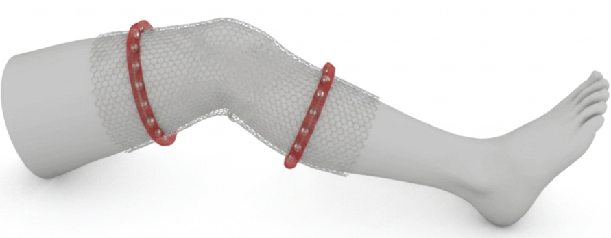
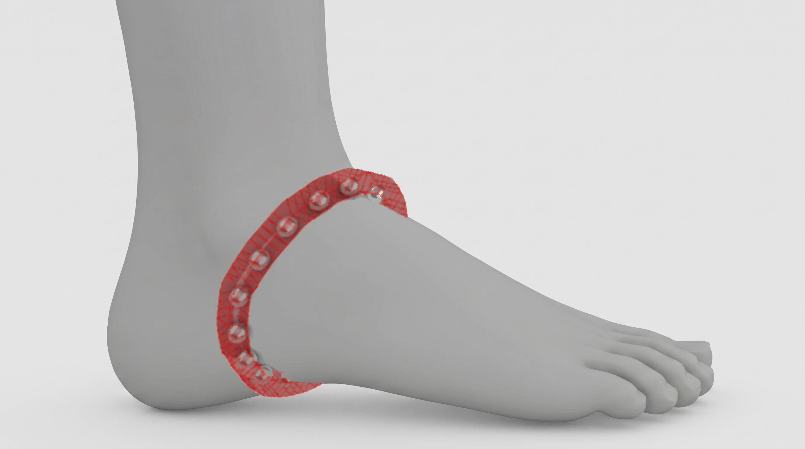

A wearable sleeve. A tablet. A map.



Musculoskeletal assessment:
How deep is swelling?
EIT-tek quantifies the severity of an injury and gives the trainer more information to make informed decisions about recovery, once only possbile with hospital grade equipment.
-
01
Extracellular Fluid
A low-frequency current cannot cross cell membranes and therefore must travel through fluid instead, however, high-frequency current penetrates cell membranes allowing for a shorter route, the differential between the two isolates deep fluid unseen by the eye.
-
02
Cell Membrane Integrity
The measured reactance and phase angle changes with respect to the severity (I.E. grade I-III). Knowing an injury's severity can help prevent compounding injuries.
-
03
Localization
An electrode array with cross-plane current injection reconstructs change, specifically distinguishing from lateral, medial, superficial, and deep.